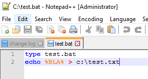
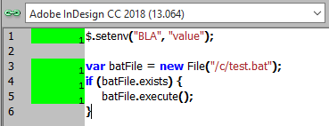
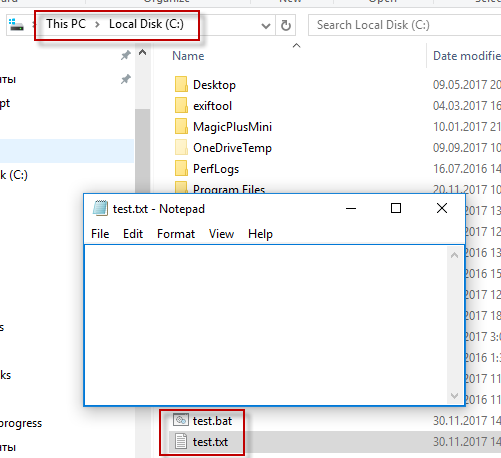
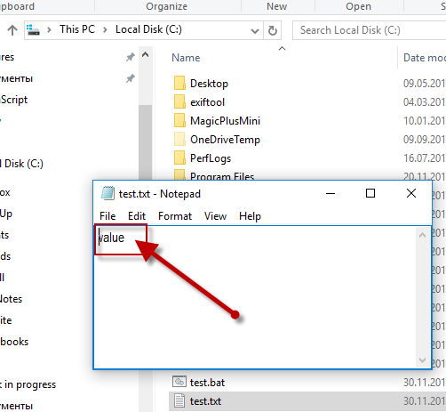
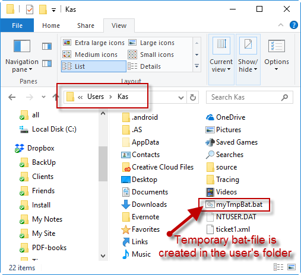

How to run .bat file with arguments
Example of executing a bat-file without arguments (the simplest case):
var myFile = new File("c:\\test.bat");
myFile.execute();
Example of executing a bat-file with setting environment variables:
The bat-file:

The JavaScript:

The test.bat and test.txt files are located in the root of the C drive. Before running the script, the txt-file is empty:

After running the script — the value of the environment variable has been passed to the txt-file:

Example of creating a temporary bat-file and starting it from VB script which is triggered, in turn, by JavaScript:
// Start Photoshop -- just an example
main('START "" "C:\\Program Files (x86)\\Adobe\\Adobe Photoshop CS3\\Photoshop.exe"');
function main(data) {
try {
var file = new File('~/myTmpBat.bat');
file.open('w');
file.encoding = 'UTF-8';
file.writeln (data);
file.close();
var vbs = "Set WshShell = CreateObject(\"WScript.Shell\")\r";
vbs += "WshShell.Run chr(34) & \"C:\\Users\\%USERNAME%\\myTmpBat.bat\" & Chr(34), 0\r";
vbs += "Set WshShell = Nothing";
app.doScript(vbs, ScriptLanguage.VISUAL_BASIC, undefined, UndoModes.FAST_ENTIRE_SCRIPT);
}
catch(err) {
alert(err.message + ", line: " + err.line);
}
}

See also Passing arguments to the jsx file from command line